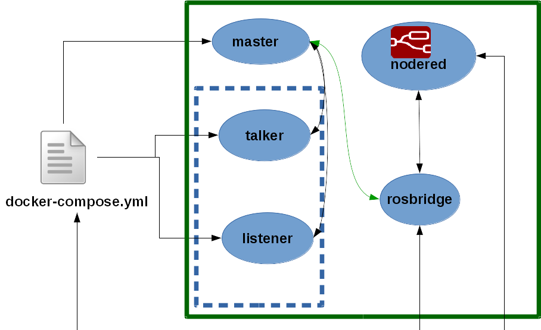
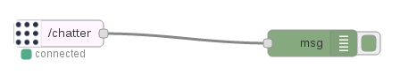
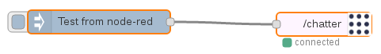

Prerequisites
1. Install and configure Docker
2. Get the code
git clone https://github.com/cocheok/robotics_devops.git
Configuration
1. Build ros-base image
cd ros
docker build -t ros_base .
cd ..
2. Build nodered image
cd nodered_base
docker build -t nodered_base .
cd ..
Talker Listener example
This is example has the following structure: 
1. Run the talker-listener example
cd demos/talker-listener
docker-compose up
2. Look for node-red url
In another window
2.1 List the docker containers
docker ps
There are one that has the node_red in his name (The node-red container has a name like talkerlistener_nodered_1).
2.2 Inspect the node-red container and get the url
replace the
docker inspect <node-red container>
3 Use node-red
Open your browser and put the ip obtained on the point 2.2. The service is running on port 1880. The topic that is used by the talker node is /chatter
3.1 Consume messages from /chatter topic
3.1.1 Put the ROS sub node from the input section and the debug node from the output section on the board and connect them

3.1.2 Configure ROS sub node with the following content:
-> ROS Server: ws://rosbridge:9090
-> Topic: /chatter
3.1.3 Configure debug:
-> Output: complete msg object
3.1.4 Click on Deploy and see messages on debug tab
3.2 Publish messages on /chatter topic
3.2.1 Put the ROS pub node from the output section and the inject node from the input section on the board and connect them

3.2.2 Configure ROS pub node with the following content:
-> ROS Server: ws://rosbridge:9090 -> Topic: /chatter
3.1.3 Configure inject:
-> On Payload select type string and put the text "Test from node-red"